File list
This special page shows all uploaded files.
{kind=link}
{kind=link}
| Date | Name | Thumbnail | Size | User | Description | Versions |
|---|---|---|---|---|---|---|
| 06:26, 19 April 2022 | StratumTremor.png (file) | 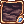 | 955 bytes | Miyu | 1 | |
| 06:25, 19 April 2022 | StormCannon.png (file) |  |
615 bytes | Miyu | 1 | |
| 06:24, 19 April 2022 | RockDown.png (file) | 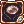 | 982 bytes | Miyu | 1 | |
| 06:24, 19 April 2022 | MysteryIllusion.png (file) | 1,002 bytes | Miyu | 1 | ||
| 06:23, 19 April 2022 | FrozenSlash.png (file) |  |
589 bytes | Miyu | 1 | |
| 06:22, 19 April 2022 | FloralFlareRoad.png (file) | 978 bytes | Miyu | 1 | ||
| 06:22, 19 April 2022 | DestructiveHurricane.png (file) |  |
657 bytes | Miyu | 1 | |
| 06:22, 19 April 2022 | DeadlyProjection.png (file) | 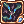 | 734 bytes | Miyu | 1 | |
| 06:22, 19 April 2022 | CrystalRain.png (file) | 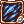 | 951 bytes | Miyu | 1 | |
| 06:21, 19 April 2022 | CrystalImpact.png (file) | 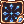 | 640 bytes | Miyu | 1 | |
| 06:21, 19 April 2022 | CrimsonArrow.png (file) | 975 bytes | Miyu | 1 | ||
| 06:21, 19 April 2022 | Climax.png (file) | 1,001 bytes | Miyu | 1 | ||
| 06:20, 19 April 2022 | AstralStrike.png (file) | 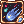 | 1,002 bytes | Miyu | 1 | |
| 06:20, 19 April 2022 | AllBloom.png (file) | 1,007 bytes | Miyu | 1 | ||
| 17:36, 17 April 2022 | Miyu battlestats vct.png (file) | 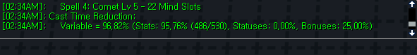 | 9 KB | Miyu | 1 | |
| 12:18, 17 April 2022 | Fairy Tail 2014 Mavis uses Fairy Law.gif (file) |  |
3.32 MB | G00suede | 1 | |
| 12:03, 17 April 2022 | Dano ROG Build.gif (file) |  |
7.87 MB | G00suede | 1 | |
| 10:23, 17 April 2022 | Miyu fast cast time.gif (file) |  |
144 KB | Miyu | 1 | |
| 10:22, 17 April 2022 | Miyu slow cast time.gif (file) |  |
1.18 MB | Miyu | 1 | |
| 17:59, 16 April 2022 | Miyu soft and hard mdef.png (file) |  |
7 KB | Miyu | 1 | |
| 17:58, 16 April 2022 | Miyu effect of mdef.png (file) | 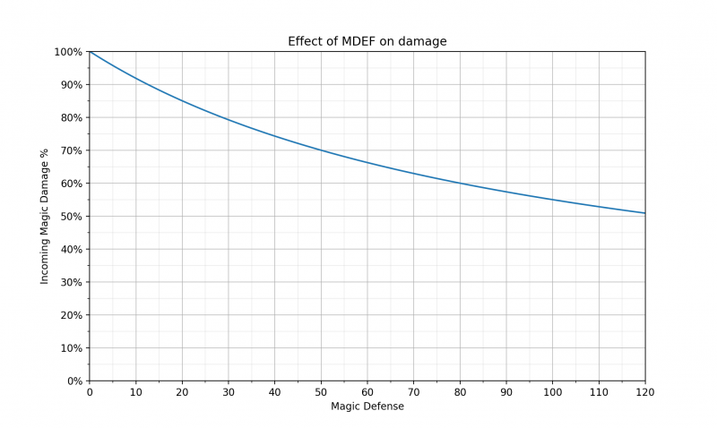 | 145 KB | Miyu | 1 | |
| 17:58, 16 April 2022 | Miyu mdef reduction.jpg (file) | 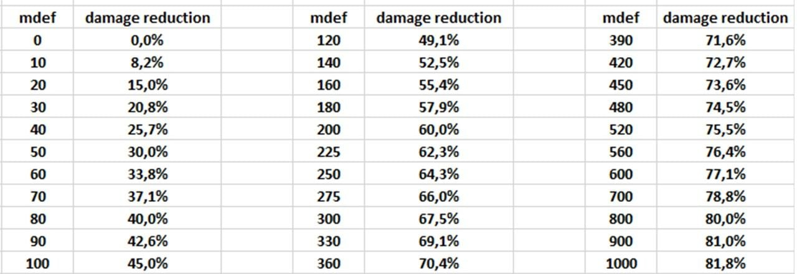 | 72 KB | Miyu | 1 | |
| 17:57, 16 April 2022 | Miyu Diminishing return.png (file) |  |
16 KB | Miyu | 1 | |
| 10:00, 16 April 2022 | Miyu1.jpg (file) |  |
1.7 MB | Miyu | 1 | |
| 08:23, 16 April 2022 | Traitstatus.png (file) |  |
14 KB | Miyu | Trait tab | 1 |
| 08:20, 16 April 2022 | AP pool.png (file) |  |
28 KB | Miyu | AP pool | 1 |
| 07:55, 16 April 2022 | AP System Demonstration.gif (file) |  |
19.49 MB | Miyu | Arch Mage AP Demonstration | 1 |
| 11:56, 15 April 2022 | Archmagepic.jpg (file) | 31 KB | Miyu | Arch Mage Image | 1 | |
| 20:10, 13 April 2022 | AutoautosoutOLD.png (file) |  |
187 KB | Melzdash | 1 | |
| 03:12, 10 April 2022 | New IG Test.gif (file) |  |
19.97 MB | G00suede | 1 | |
| 19:20, 6 April 2022 | SoftHard.png (file) | 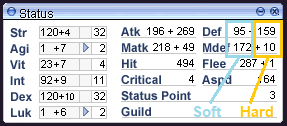 | 8 KB | Melzdash | 1 | |
| 18:27, 6 April 2022 | ASPDgraph2.png (file) | 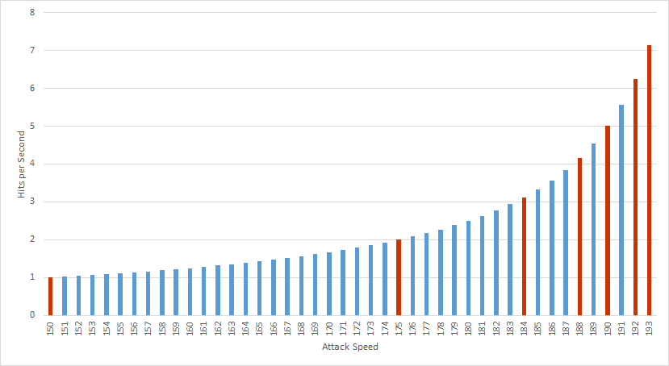 | 18 KB | Melzdash | 1 | |
| 12:04, 6 April 2022 | MinmaxGraph.png (file) |  |
9 KB | Melzdash | 1 | |
| 11:33, 1 April 2022 | ASPDgraph.png (file) | 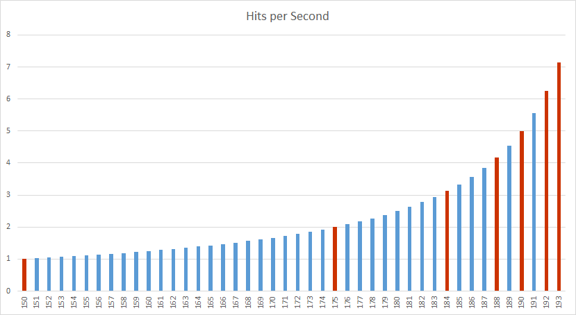 | 18 KB | Melzdash | 1 | |
| 19:57, 31 March 2022 | AncientJupeInstance.png (file) |  |
62 KB | Ikey | 2 | |
| 13:12, 30 March 2022 | SURVMvsINTM.png (file) | 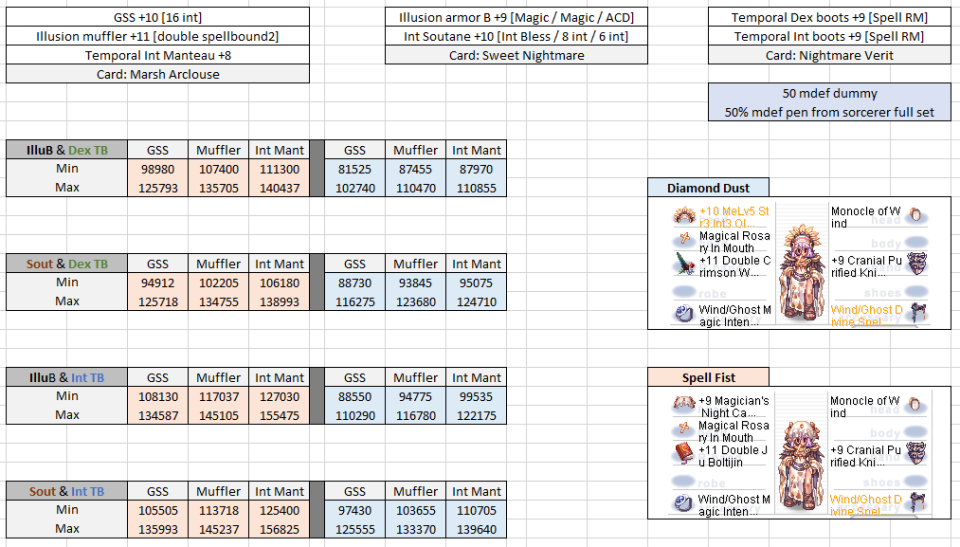 | 231 KB | Melzdash | 1 | |
| 16:26, 20 March 2022 | NovaRO ancient lab nuran.png (file) | 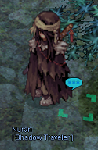 | 59 KB | Drakamg | Fixing size. | 4 |
| 17:49, 18 March 2022 | Highest ED.jpg (file) | 22 KB | G00suede | 1 | ||
| 17:44, 18 March 2022 | Earth Drive Spam Rate.gif (file) |  |
8.88 MB | G00suede | 1 | |
| 17:42, 18 March 2022 | Shield Press Spam Rate.gif (file) |  |
11.41 MB | G00suede | 1 | |
| 14:29, 10 March 2022 | EDMAX2.jpg (file) | 34 KB | G00suede | 1 | ||
| 14:18, 10 March 2022 | EDMAX.jpg (file) | 174 KB | G00suede | 1 | ||
| 14:15, 10 March 2022 | SPLvl3.gif (file) |  |
10.82 MB | G00suede | 1 | |
| 16:08, 1 March 2022 | JF ALEXIS.gif (file) | 25 KB | Tokeiburu | 1 | ||
| 16:08, 1 March 2022 | Jf hell apocalips.gif (file) | 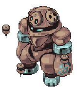 | 83 KB | Tokeiburu | 1 | |
| 16:08, 1 March 2022 | JF recon robot b.gif (file) |  |
15 KB | Tokeiburu | 1 | |
| 16:08, 1 March 2022 | HAZ CANNON.gif (file) |  |
1 KB | Tokeiburu | 1 | |
| 16:08, 1 March 2022 | JF ANOM.gif (file) |  |
16 KB | Tokeiburu | 1 | |
| 16:03, 1 March 2022 | JF recon robot r.gif (file) |  |
15 KB | Tokeiburu | 1 | |
| 16:02, 1 March 2022 | JF archdam b.gif (file) |  |
66 KB | Tokeiburu | 1 |
{kind=link}
{kind=link}
{kind=link}
{kind=link}
{kind=link}
{kind=link}
{kind=link}
{kind=link}
{kind=link}
{kind=link}
{kind=link}
{kind=link}
{kind=link}
{kind=link}
{kind=link}
{kind=link}
{kind=link}
{kind=link}
{kind=link}
{kind=link}
{kind=link}
{kind=link}